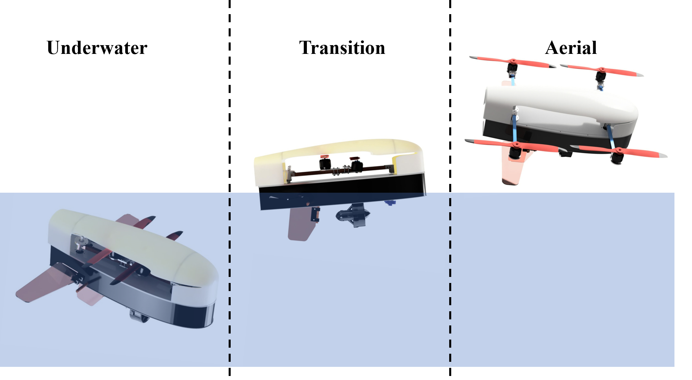
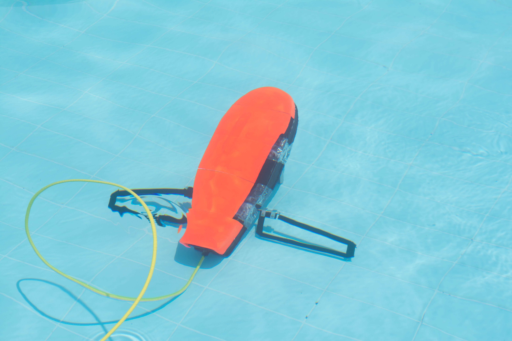
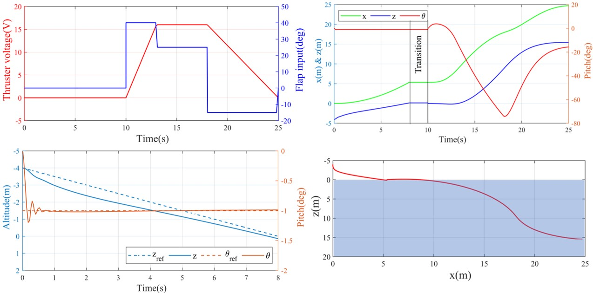
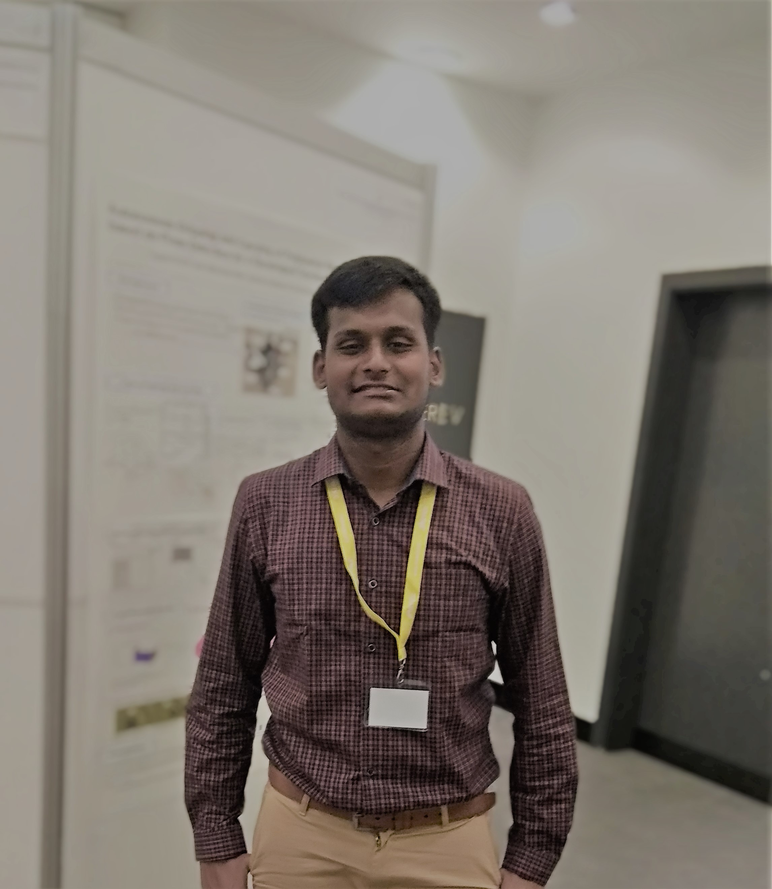

Hybrid aerial underwater robot - Acutus
My Work | | Links:

Acutus is a hybrid robot which can fly in air and also navigate underwater. It is a remotely operated underwater vehicle with a streamlined fish-like outer profile and uses the conventional quadrotor configuration for aerial traversal. Acutus switches between quadcopter and fish morphology using minimal actuation. Major contribution is the significant reduction in hydrodynamic drag compared to existing systems.
My contribution
The work is a team effort of four undergraduate students supervised by a PhD scholar and Professor. After several iterations of ideations, we all agreed upon a fish shaped reconfigurable quadrotor system. I was partially involved with design of the mechanisms, outer profile and casings, clamps, control planes and the fabrication process. I extensively worked on estimating the rigid body (inertial) and added mass, coriolis & centripetal, hydrodynamic damping parameters using computational system identification method. Fluent (ANSYS CFD) tool was used for estimating drag parameters and Fusion 360 for CAD modelling. Using Newton-Euler formulation I modelled underwater and aerial dynamics and presented a unified framework for overall dynamics including transition dynamics. The developed prototype was tested to succesfully validate the concept. My contribution was relatively higher than other members.
Multimedia
Modes of Operation

Field testing of underwater traversal at IIT Madras

Simulation of air to water transition

Preliminary video describing the research work
Code for the project can be found here.
Publications
Puppala, R.; Sivadasan, N.; Vyas, A.; Molawade, A.; Ranganathan, T. and Thondiyath, A. (2019). Design, Estimation of Model Parameters, and Dynamical Study of a Hybrid Aerial-underwater Robot: Acutus.In Proceedings of the 16th International Conference on Informatics in Control, Automation and Robotics - Volume 2: ICINCO, ISBN 978-989-758-380-3, pages 423-430. DOI: 10.5220/0007926104230430 (LINK)
Abhijeet Vyas, Akshay Molawade, Nikhil Sivadasan, Ridhi Puppala, Thiyagarajan Ranganathan and Asokan Thondiyath (2019). Estimation of hydrodynamic parameters and its effects on novel hybrid Aerial-Underwater robot –Acutus. In Proceedings of MTS/IEEE OCEANS 2019, Marseilles, France (June 17-20 2019)
Euro Trip
I presented my paper at ICINCO 2019 in Prague Czechia during July 29-31 2019. It was my first trip to Europe and maiden experience of presenting research paper at academic conference. Detours to Venice, Budapest, Cesky Krumlov from Prague were the most exciting part of the Euro trip.
On the day of presentation

Venice boat ride

Hungarian Parliament glitters on the banks of river Danube in Budapest